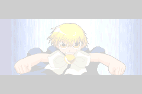
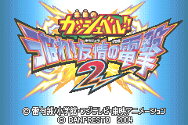

Konjiki no Gashbell!! - Unare! Yuujou no Zakeru 2 (Japan)
EEPROM 4K gbakit Built-In 🎮 Button Cheat 💾 MultiBoot 🎮 4P Link
Cartridge Identity
- Game Code
BGYJ(FamilyBGY)- Header Title
GASH-ZAKERU2- Maker / Revision
D9/ rev0- ROM Size
- 16.0 MiB (16,777,216 B)
- Save Media
EEPROM 4K- SHA-256
039b57b95f60928caf08f32375b1c0ea5bc779314cf4f886936a4d70100db2a8- Engine / SDK Group
comm-003(128 families)
Screenshots


Verified Button-Combo Cheat
Zero-patch retail controller cheat (Wave 3): 4-way counterfactually verified in headless
libmgba. See all verified titles in the Button-Combo Cheats Catalog.
- Effect
- Hidden Controller Sequence Unlock (ROM table 0x087d4fd4)
- Button Sequence
UP, LEFT, RIGHT, DOWN, L, UP, LEFT, UP, DOWN, R, LEFT, UP, RIGHT, DOWN, L- Verification Verdict
- RAM Unique Reaction
- Target RAM Address
0x020176A7- ROM Table Address
0x087d4fd4- Timing Protocol
boot=360f,hold=6f,release=6f,settle=60f- Activation Indicator
- Headless libmgba 4-way counterfactual verified: unique IWRAM/EWRAM state transition distinct from control, wrong, and reversed inputs
gbakit cheat verify BGYJLink Cable & Multiplayer Communications
This title contains detected communication capabilities: 💾 MultiBoot 🎮 4P Link.
Detailed protocol specifications, SIO registers, Joybus commands, and MultiBoot sequences are documented in the Link & Multiplayer Reference.
- Multi-Player SIO (4P)
- 16-bit ring network · SIOCNT (
0x04000128) literals:0x0244b0,0x024644,0x024678· SIODATA32/SIOMULTI0 (0x04000120) literals:0x024914,0x08efe8 - Single-Cart MultiBoot
- Single-Cartridge MultiBoot (Download Play) client/server handler · Thumb SWI 0x25 (
0xDF25):0xc4ae8e,0xc87c04,0xc8d5b6,0xd0fe20
Battery Save Support in gbakit
Built-in definition (BGYJ)
gbakit save verify BGYJ save.sav
gbakit save decode BGYJ save.sav
gbakit save fix BGYJ damaged.sav -o repaired.savROM Assets, Compression & Audio
- BIOS Compression
- LZ77 (
0x10): 1 streams · RLE (0x30): 1 streams - ROM Pointer Tables
- 14 tables (0 pointing to validated compressed streams)
- SDK Backup Tags
EEPROM_V124
Asset Map (formatkit.asset-map.v1)
Download BGYJ-r1-4b7723375a4268f0.asset-map.json.gz (326,483 B (318.8 KiB)) Verified PASS · 2.46% coverage
| Metric | Bytes / Value | Entries |
|---|---|---|
| Identified | 246,880 B (241.1 KiB) (1.47%) | 3,861 |
| Mapped | 0 B (0.00%) | 0 |
| Opaque | 165,172 B (161.3 KiB) (0.98%) | 1 |
| Unknown | 16,365,164 B (15.61 MiB) (97.54%) | 2,681 |
| Total ROM Size | 16,777,216 B (16.00 MiB) | 6,543 |
| Coverage % | 2.46% | — |
| Entries w/ Code Refs | 4,480 / 6,543 (68.47%) | — |
Top Identified Formats: gfx.gba-palette (3,859 · 238,688 B (233.1 KiB)) · audio.m4a-song-table (1 · 8,000 B (7.8 KiB)) · gba.rom-header (1 · 192 B)
Largest unknown Extents (Headerless / Custom Asset Candidates)
| Offset | Size | Shannon Entropy | Code Refs |
|---|---|---|---|
0x00573424 | 9,107,624 B (8.69 MiB) | 6.407 bits/B | 1 |
0x00E24C0C | 1,781,440 B (1.70 MiB) | 6.941 bits/B | 8 |
0x00084CA0 | 58,888 B (57.5 KiB) | 6.651 bits/B | 0 |
0x00064E88 | 55,840 B (54.5 KiB) | 6.299 bits/B | 0 |
0x00056F34 | 49,056 B (47.9 KiB) | 6.287 bits/B | 0 |
gzip -dk BGYJ-r1-4b7723375a4268f0.asset-map.json.gz && gbakit map verify rom.gba BGYJ-r1-4b7723375a4268f0.asset-map.json
gbakit assets export rom.gba --asset-map BGYJ-r1-4b7723375a4268f0.asset-map.json -o out/Text, Fonts & Scene Data
- Primary Text Encoding
- Plain ASCII (uncompressed) (
99ASCII strings ·9Shift-JIS runs) - Font & VWF Indicators
- VWF Width Table 1bpp Font · BIOS SWIs: BitUnPack
0x10:6· LZ770x11/12:2· Huffman0x13:0· RLE0x14/15:0 - Scene & Packaging
80ROM pointer tables (≥32 entries,2≥200) ·38relativeu32TOCs ·296OAM metasprite hits
Password System
- Save Media
- Battery-Backed (EEPROM)
- Password Class
- Password UI Strings Detected (
password_ui_strings_only) - Password UI Strings
password
Hardware MMIO Subsystems
ppu_display0x800023c,0x808fb40